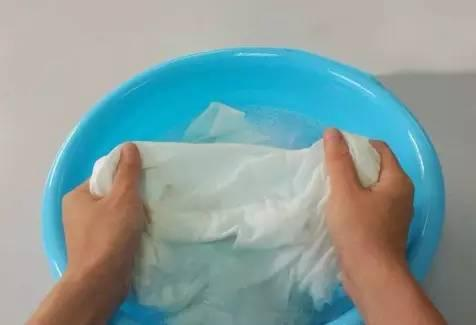
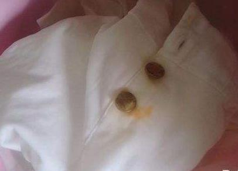

用15%的醋酸溶液（或者15%的酒石酸溶液）洒在污渍处，或者将沾染锈迹的部分浸泡在该溶液里约一天左右，再用清水漂洗干净。还可以用10%的柠檬酸溶液将有锈迹处浸湿，然后泡入浓盐水中，次日再揉搓，冲洗干净即可。

如果白色棉织物上沾染了铁锈，可用小勺舀取一小把草酸放在污渍处，然后撒上些温水，轻轻揉擦，然后即用清水漂洗干净。特别注意操作要快，避免草酸腐蚀衣物，此法不可多次使用。
根据衣物锈迹污染的程度，取出若干个维生素C药片碾成粉末后，撒在浸湿的衣服锈迹处，待充分浸泡后，使劲搓洗几次，可以去除铁锈渍。
对于衣物上的锈迹，如果不是很多，可用衣物除锈剂清除。把去除剂对准污处均匀喷洒，在衣物上停留3--5分钟后，反复揉搓几遍，再用清水冲洗几次，直到污渍清除干净。注意要根据污物的多少来决定除锈剂的用量，过多过少都不好。
如果是车轮毂的锈迹，可用漆面铁粉去除剂清洗掉。具体方法是先用半湿半干的布把轮毂擦拭干净，然后喷洒上去锈剂，停10--15分钟后再用软干布使劲擦拭干净即可。如果锈迹比较严重，可再次喷洒去锈剂，停一会儿再擦拭。
洗掉铁锈最简便的方法：采用新鲜柠檬若干个，榨出柠檬汁洒在锈渍上，待柠檬汁浸透衣物后用手揉擦，反复数次，直至锈渍除去，再用肥皂水清洗，最后用清水冲干净即可。
1，2两种方法使用的是化学原料，洗涤铁锈效果 较 好，但酸性毕竟对衣物和手有一定腐蚀作用，因此尽量少用或采取戴手套等防护措施。
1、衣服上染了铁锈，其实只要用简单的一些材料就可以洗净，比如日常生活中我们吃的柠檬，把柠檬汁挤出来，涂到铁锈的地方洗，就可以把铁锈洗净，铁锈洗掉后，用清水把柠檬漂清就可以了。
2、一个很快的方法，就是草酸，这个在化工用品里很常见，当然不能直接用，需要稀释，大概1比5稀释，在50℃左右温水中洗涤除去，然后用清水漂净。用3—4粒维生素C药片碾成粉末后，撒在浸湿的衣服污处，然后用水搓洗几次，也可去除锈渍。如是铁锈陈渍，可用10％的草酸、柠檬酸加水混合液将沾锈处浸湿，然后浸于浓盐水中，1天后洗净即可。
3、用消毒液也是可以的，不过仅限于白色衣服，其他颜色的可能会对色彩有损伤，把消毒液滴到铁锈处，用手搓一下，就可以把铁锈洗掉，然后漂清。以上几种方法都可以解决衣服上的铁锈。
4、先用沸水浸湿，然后用发酸的牛奶洗，最后洗净晾干就会发现衣服上面的锈渍不见了。
5、将衣物浸在含有２％醋酸的水里，两三分钟后，用水冲洗便成，假如污渍很少，亦可用棉花棒蘸 上 含有５％醋酸的水，一遍一遍地在污渍处抹，衣服上面的锈渍便会消失。
铁锈可以用以下材料清洗：
1、用15%的醋酸溶液（15%的酒石酸溶液亦可）
2、用10%的柠檬酸溶液
3、2％的草酸溶液
4、3—4粒维生素C粉末
5、如是铁锈陈渍，可用10％的草酸、柠檬酸加水混合液
6、鲜柠檬汁液